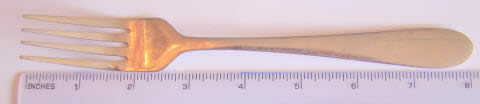

US Standard Lengths
Measuring how long things are, how tall they are, or how far apart they might be are all examples of length measurements.

Example: This fork is 8 inches long
These are the most common measurements:
- Inches
- Feet
- Yards
- Miles

Small units of length are called inches.
The last joint of your finger or thumb is about 1 inch (depending on how big your fingers are!).
An inch is defined as exactly 2.54 centimeters (a metric measurement)
Lots of things are measured in inches from rainfall to paper length.
Measuring in inches gives us a way for everyone to understand the size of something.
When we have 12 inches together, it is known as a foot.
1 foot = 12 inches
A long time ago, people used their feet to measure things. But everyone has different sized feet so it did not work very well.
Using 12 inches put together to make one foot lets everyone have an accurate picture of what exactly a "foot" of length is.

When 3 feet are together, it is called a yard.
(This isn’t the same thing as a garden, though they are both referred to as a "yard"!)
1 yard = 3 feet
The length of this guitar is about 1 yard.

When we put together 1,760 yards, we have a mile.
1 mile = 1,760 yards = 5,280 feet
Miles are long distances and are mostly used to measure the distance between places which are far away from each other. Most people refer to miles when they are driving, biking or jogging.
To remember how many feet in a mile think:
Five tomato
Five two eight oh
5,280 feet in a mile
Final thoughts about measuring length:
1 foot = 12 inches
1 yard = 3 feet = 36 inches
1 mile = 1,760 yards = 5,280 feet = 63,360 inches
From Miles to Kilometers
A mile is exactly 1.609344 kilometers. Yes, the mile has a metric definition.
Example: what is 55 miles in kilometers?
55 miles × 1.609344 km/mile = 88.51392 km
Quick but not accurate Conversions
Here is a funny thing! These numbers can help us do conversions:
0, 1, 1, 2, 3, 5, 8, 13, 21, 34, 55, 89, 144, ...
It is the Fibonacci Sequence, which is made by adding the two previous numbers each time. Example: 5+8=13, 8+13=21, etc.
Its pairs of numbers can help us
convert between miles and kilometers.
The first few numbers don't work well, but let's look at "3, 5":
3 Miles is About 5 km (3×1.609344 = 4.828032)
And "5, 8": 5 Miles is About 8 km (5×1.609344 = 8.04672)
And "8, 13": 8 Miles is About 13 km (8×1.609344 = 12.874752)
And so on.
(Why? Because the ratio between pairs of numbers gets closer and closer to the Golden Ratio of 1.6180... which just happens to be nearly 1.609344)
Lots of Examples
An inch is:
- about the width of a large thumb
- exactly 2.54 centimeters (it has a metric definition)
A foot is:
- about the length of a large foot
- slightly more than 30 centimeters
- exactly 30.48 centimeters (it has a metric definition)
A yard is about:
- half the length of a bed
- the width of a large fridge
- the height of a countertop
- four rungs up a ladder
- five steps up a staircase
- the length of a bike
- the depth of the shallow end of a swimming pool
- the width of a dining table
- the length of an acoustic guitar
- the height of a 5 year old
- shoulder to opposite wrist of an adult
- outstreched arms of a child
- waist high on an adult
- a long stride
- exactly 0.9144 meters (it has a metric definition)
A mile is about:
- how far you walk in 20 minutes
- 2,000 paces
- 1,000 counts of "left-right" when marching (as the Roman Centurions marched!)
- exactly 1.609344 kilometers